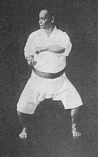

Karate is a martial art developed in the Ryukyu Kingdom. It developed from the indigenous Ryukyuan martial arts under the influence of Kung Fu, particularly Fujian White Crane. Karate is now predominantly a striking art using punching, kicking, knee strikes, elbow strikes and open-hand techniques such as knife-hands, spear-hands and palm-heel strikes. Historically, and in some modern styles, grappling, throws, joint locks, restraints and vital-point strikes are also taught. A karate practitioner is called a karateka.
Karate began as a common fighting system known as te among the Pechin class of the Ryukyuans. After trade relationships were established with the Ming dynasty of China in 1372 by King Satto of Chūzan, some forms of Chinese martial arts were introduced to the Ryukyu Islands by the visitors from China, particularly Fujian Province. A large group of Chinese families moved to Okinawa around 1392 for the purpose of cultural exchange, where they established the community of Kumemura and shared their knowledge of a wide variety of Chinese arts and sciences, including the Chinese martial arts. The political centralization of Okinawa by King Shō Hashi in 1429 and the policy of banning weapons by King Shō Shin in 1477, later enforced in Okinawa after the invasion by the Shimazu clan in 1609, are also factors that furthered the development of unarmed combat techniques in Okinawa.
Practice
Karate can be practiced as an art (budō), self defense or as a combat sport. Traditional karate places emphasis on self-development (budō). Modern Japanese style training emphasizes the psychological elements incorporated into a proper kokoro (attitude) such as perseverance, fearlessness, virtue, and leadership skills. Sport karate places emphasis on exercise and competition. Weapons are an important training activity in some styles of karate. Karate training is commonly divided into kihon (basics or fundamentals), kata (forms), and kumite (sparring).
Kihon
Kihon means basics and these form the base for everything else in the style including stances, strikes, punches, kicks and blocks. Karate styles place varying importance on kihon. Typically this is training in unison of a technique or a combination of techniques by a group of karateka. Kihon may also be prearranged drills in smaller groups or in pairs.
Kata
Motobu Chōki in Naihanchi-dachi, one of the basic karate stances
Kata means literally "shape" or "model." Kata is a formalized sequence of movements which represent various offensive and defensive postures. These postures are based on idealized combat applications. The applications when applied in a demonstration with real opponents is referred to as a Bunkai. The Bunkai shows how every stance and movement is used. Bunkai is a useful tool to understand a kata. To attain a formal rank the karateka must demonstrate competent performance of specific required kata for that level. The Japanese terminology for grades or ranks is commonly used. Requirements for examinations vary among schools.
Kumite
Sparring in Karate is called kumite. It literally means "meeting of hands." Kumite is practiced both as a sport and as self-defense training. Levels of physical contact during sparring vary considerably. Full contact karate has several variants. Knockdown karate (such as Kyokushin) uses full power techniques to bring an opponent to the ground. In kickboxing variants (for example K-1), the preferred win is by knockout. Sparring in armour, bogu kumite, allows full power techniques with some safety. Sport kumite in many international competition under the World Karate Federation is free or structured with light contact or semi contact and points are awarded by a referee. In structured kumite (prearranged), two participants perform a choreographed series of techniques with one striking while the other blocks. The form ends with one devastating technique (hito tsuki). In free sparring (Jiyu Kumite), the two participants have a free choice of scoring techniques. The allowed techniques and contact level are primarily determined by sport or style organization policy, but might be modified according to the age, rank and sex of the participants. Depending upon style, take-downs, sweeps and in some rare cases even time-limited grappling on the ground are also allowed. Free sparring is performed in a marked or closed area. The bout runs for a fixed time (2 to 3 minutes.) The time can run continuously (iri kume) or be stopped for referee judgment. In light contact or semi contact kumite, points are awarded based on the criteria: good form, sporting attitude, vigorous application, awareness, good timing and correct distance. In full contact karate kumite, points are based on the results of the impact, rather than the formal appearance of the scoring technique.
Dōjō Kun
In the bushidō tradition dōjō kun is a set of guidelines for karateka to follow. These guidelines apply both in the dōjō (training hall) and in everyday life.
Conditioning
Okinawan karate uses supplementary training known as hojo undo. This utilizes simple equipment made of wood and stone. The makiwara is a striking post. The nigiri game is a large jar used for developing grip strength. These supplementary exercises are designed to increase strength, stamina, speed, and muscle coordination. Sport Karate emphasizes aerobic exercise, anaerobic exercise, power, agility, flexibility, and stress management. All practices vary depending upon the school and the teacher.
Sport
Gichin Funakoshi said, "There are no contests in karate." In pre–World War II Okinawa, kumite was not part of karate training. Shigeru Egami relates that, in 1940, some karateka were ousted from their dōjō because they adopted sparring after having learned it in Tokyo. Karate is divided into style organizations. These organizations sometimes cooperate in non-style specific sport karate organizations or federations. Examples of sport organizations include AAKF/ITKF, AOK, TKL, AKA, WKF, NWUKO, WUKF and WKC. Organizations hold competitions (tournaments) from local to international level. Tournaments are designed to match members of opposing schools or styles against one another in kata, sparring and weapons demonstration. They are often separated by age, rank and sex with potentially different rules or standards based on these factors. The tournament may be exclusively for members of a particular style (closed) or one in which any martial artist from any style may participate within the rules of the tournament (open). The World Karate Federation (WKF) is the largest sport karate organization and is recognized by the International Olympic Committee (IOC) as being responsible for karate competition in the Olympic Games. The WKF has developed common rules governing all styles. The national WKF organizations coordinate with their respective National Olympic Committees. WKF karate competition has two disciplines: sparring (kumite) and forms (kata). Competitors may enter either as individuals or as part of a team. Evaluation for kata and kobudō is performed by a panel of judges, whereas sparring is judged by a head referee, usually with assistant referees at the side of the sparring area. Sparring matches are typically divided by weight, age, gender, and experience. WKF only allows membership through one national organization/federation per country to which clubs may join. The World Union of Karate-do Federations (WUKF) offers different styles and federations a world body they may join, without having to compromise their style or size. The WUKF accepts more than one federation or association per country. Sport organizations use different competition rule systems. Light contact rules are used by the WKF, WUKO, IASK and WKC. Full contact karate rules used by Kyokushinkai, Seidokaikan and other organizations. Bogu kumite (full contact with protective shielding of targets) rules are used in the World Koshiki Karate-Do Federation organization. Shinkaratedo Federation use boxing gloves. Within the United States, rules may be under the jurisdiction of state sports authorities, such as the boxing commission. In August 2016, the International Olympic Committee approved karate as an Olympic sport beginning at the 2020 Summer Olympics. Karate, although not widely used in mixed martial arts, has been effective for some MMA practitioners. Various styles of karate are practiced in MMA: Lyoto Machida and John Makdessi practice Shotokan; Bas Rutten and Georges St-Pierre train in Kyokushin; and Michelle Waterson holds a black belt in American Free Style Karate.
Rank
In 1924 Gichin Funakoshi, founder of Shotokan Karate, adopted the Dan system from the judo founder Jigoro Kano using a rank scheme with a limited set of belt colors. Other Okinawan teachers also adopted this practice. In the Kyū/Dan system the beginner grades start with a higher numbered kyū (e.g., 10th Kyū or Jukyū) and progress toward a lower numbered kyū. The Dan progression continues from 1st Dan (Shodan, or 'beginning dan') to the higher dan grades. Kyū-grade karateka are referred to as "color belt" or mudansha ("ones without dan/rank"). Dan-grade karateka are referred to as yudansha (holders of dan/rank). Yudansha typically wear a black belt. Normally, the first five to six dans are given by examination by superior dan holders, while the subsequent (7 and up) are honorary, given for special merits and/or age reached. Requirements of rank differ among styles, organizations, and schools. Kyū ranks stress stance, balance, and coordination. Speed and power are added at higher grades. Minimum age and time in rank are factors affecting promotion. Testing consists of demonstration of techniques before a panel of examiners. This will vary by school, but testing may include everything learned at that point, or just new information. The demonstration is an application for new rank (shinsa) and may include kata, bunkai, self-defense, routines, tameshiwari (breaking), and kumite (sparring).